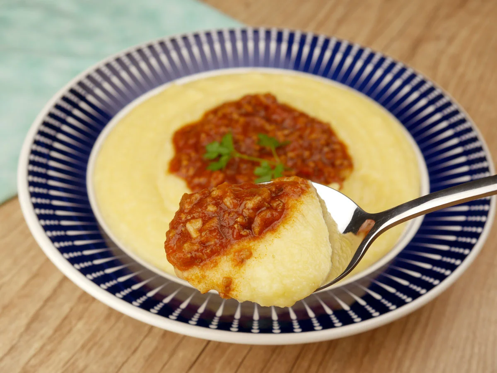
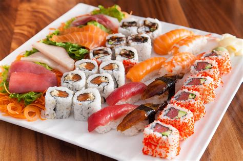
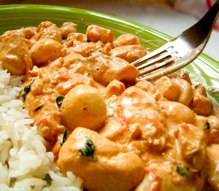
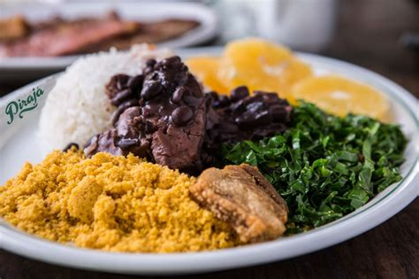

Destaques:

Polenta Cremosa
Uma receita tradicional italiana que derrete na boca. Acompanhada de molho de tomate caseiro.

Sushi Delicioso
Uma seleção de sushis frescos e saborosos que são um verdadeiro deleite para os amantes de comida japonesa.

Espaguete ao Molho Pesto
Um prato clássico italiano com molho pesto fresco e ingredientes de alta qualidade.

Estrogonofe de Frango
Uma versão irresistível do estrogonofe com pedaços suculentos de frango em um molho cremoso.

Feijoada Brasileira
Um prato icônico da culinária brasileira, repleto de sabores e acompanhamentos deliciosos.